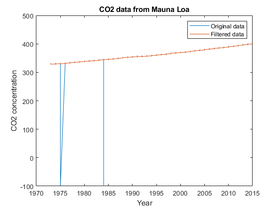
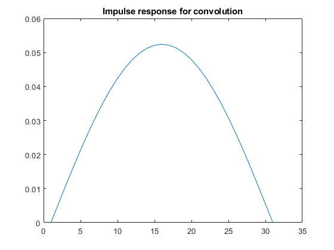
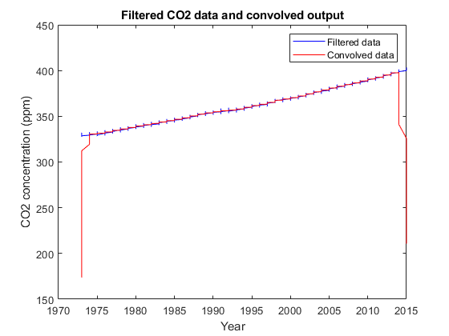
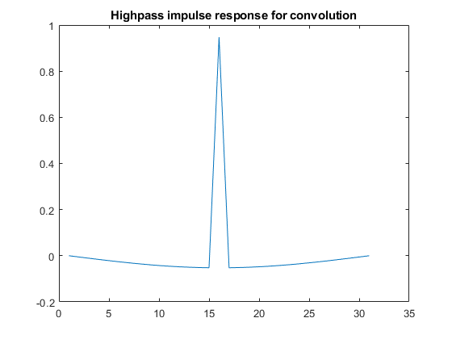
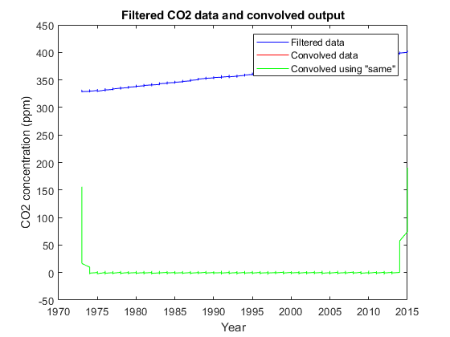

Contents
1:
load CO2_MaunaLoa.mat
years = datevec(datenum(num2str(ts), 'yyyy'));
years = years(:,1);
figure;
plot(years, CO2);
xlabel('Year');
ylabel('CO2 concentration');
title('CO2 data from Mauna Loa');
CO2_filt = medfilt1(CO2, 3);
hold on
plot(years(:,1), CO2_filt);
legend('Original data', 'Filtered data');

2:
h = sin(pi*(0:30)/30);
h = h / sum(h);
figure;
plot(h);
title('Impulse response for convolution');
CO2_conv2 = conv(CO2_filt, h);
CO2_conv2 = CO2_conv2(16:end-15);
figure;
plot(years, CO2_filt, 'b');
hold on;
plot(years, CO2_conv2, 'r');
xlabel('Year');
ylabel('CO2 concentration (ppm)');
title('Filtered CO2 data and convolved output');
legend('Filtered data', 'Convolved data');
 
3:
h2 = h*-1;
h2(16) = h2(16) + 1;
figure;
plot(h2)
title('Highpass impulse response for convolution');
CO2_conv2 = conv(CO2_filt, h2);
CO2_conv2 = CO2_conv2(16:end-15);
CO2_conv2_same = conv(CO2_filt, h2, 'same');
figure;
plot(years, CO2_filt, 'b');
hold on;
plot(years, CO2_conv2, 'r');
hold on;
plot(years, CO2_conv2_same, 'g')
xlabel('Year');
ylabel('CO2 concentration (ppm)');
title('Filtered CO2 data and convolved output');
legend('Filtered data', 'Convolved data', 'Convolved using "same"');
 
Short answers:
fprintf("Briefly describe what the median filter is doing in part 1: Comment on whether it a linear filter? \n")
fprintf("The median filter is applied to remove spurious data. It's a *nonlinear* (the output is not a linear combination of the input sample) filtering technique that replaces each data point with the median of neighboring points. \n\n")
fprintf("Could the input signal be recovered if you knew the type of median filter? \n")
fprintf("If we knew the type of median filter, we could not recover the original input signal because median filters remove information by their very nature, and are not able to trace back to the original signal \n\n")
fprintf("Beyond removing the spurious data how does it affect the data at the peaks and troughs of each cycle? \n")
fprintf("By reducing the amplitude of the spikes as the filter replaces each spike with the median value of its neighboring samples. This results in a smoother signal without the spurious data points, but the peaks and troughs are less pronounced. \n\n")
fprintf("Describe what the filter would look like if you combined the impulse response of 6-3a and 6-3b. Describe what the output signal would look like if you added the output signal from parts 2 and 3) \n")
fprintf(" The output signal from part 2 is a low-pass filtered version of the input signal, while the output signal from part 3 is a high-pass filtered version of the input signal. Combining these two output signals would result in a signal that has had both low-frequency and high-frequency components removed, leaving only the mid-band frequencies. In other words, the resulting signal would be a bandpass filtered (only a certain range of frequencies) version of the original CO2 data. \n\n")
fprintf("Which filter (below) removes the DC offset? \n")
fprintf("The high-pass filter will remove the DC offset (second graph in the image)")
Briefly describe what the median filter is doing in part 1: Comment on whether it a linear filter?
The median filter is applied to remove spurious data. It's a *nonlinear* (the output is not a linear combination of the input sample) filtering technique that replaces each data point with the median of neighboring points.
Could the input signal be recovered if you knew the type of median filter?
If we knew the type of median filter, we could not recover the original input signal because median filters remove information by their very nature, and are not able to trace back to the original signal
Beyond removing the spurious data how does it affect the data at the peaks and troughs of each cycle?
By reducing the amplitude of the spikes as the filter replaces each spike with the median value of its neighboring samples. This results in a smoother signal without the spurious data points, but the peaks and troughs are less pronounced.
Describe what the filter would look like if you combined the impulse response of 6-3a and 6-3b. Describe what the output signal would look like if you added the output signal from parts 2 and 3)
The output signal from part 2 is a low-pass filtered version of the input signal, while the output signal from part 3 is a high-pass filtered version of the input signal. Combining these two output signals would result in a signal that has had both low-frequency and high-frequency components removed, leaving only the mid-band frequencies. In other words, the resulting signal would be a bandpass filtered (only a certain range of frequencies) version of the original CO2 data.
Which filter (below) removes the DC offset?
The high-pass filter will remove the DC offset (second graph in the image)